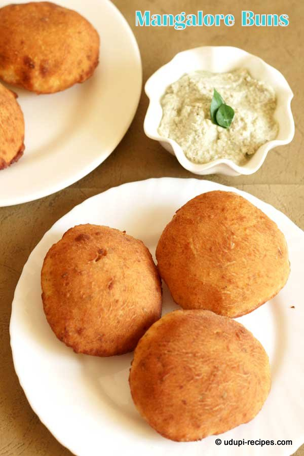
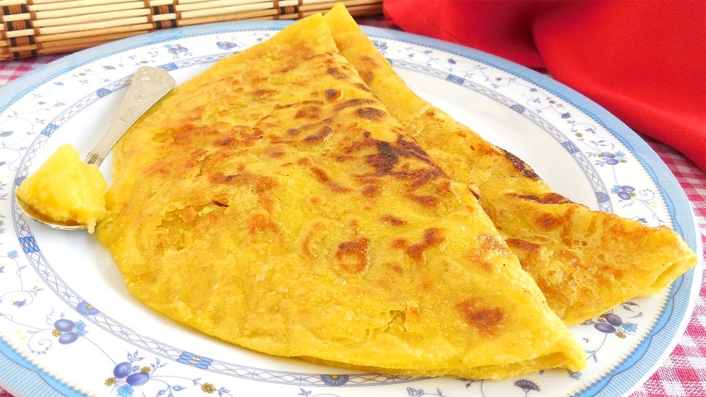
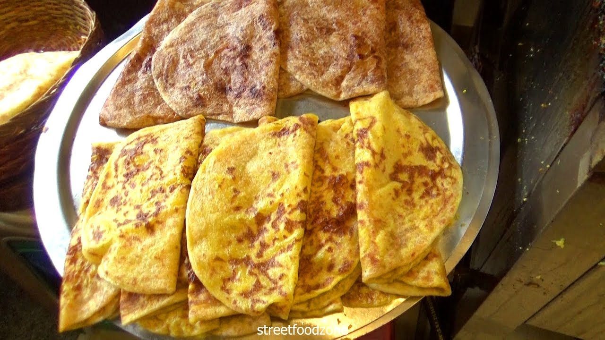
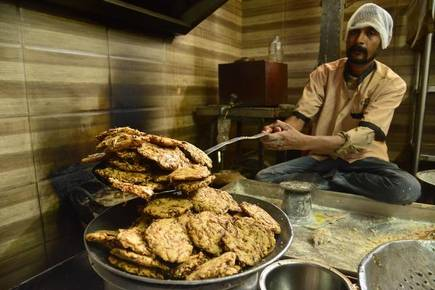
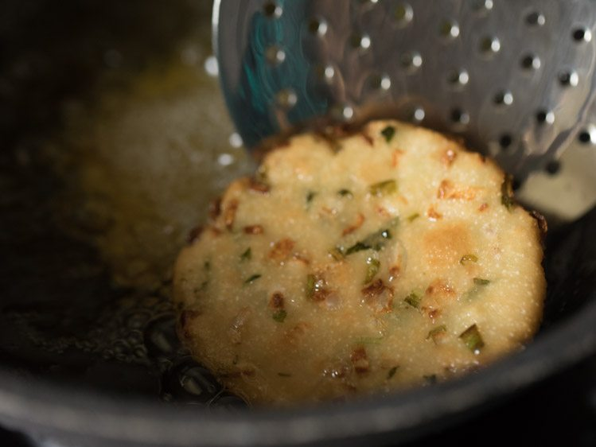
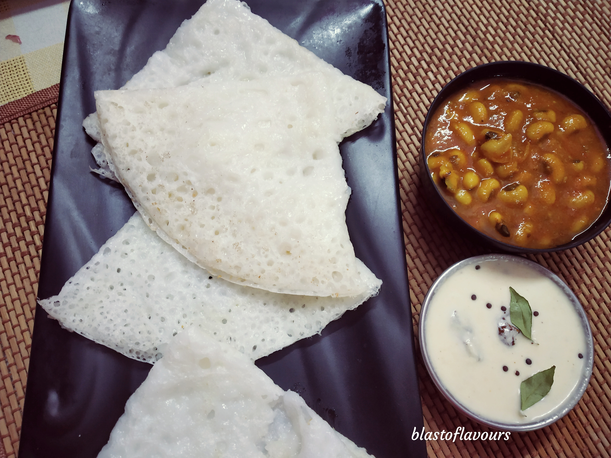
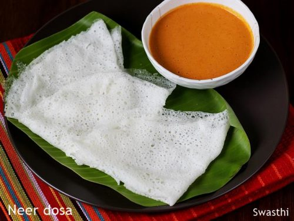

MYSORE MASALA
DOSA


As the name suggests, Mysore masala dosa originated from the city of palaces, Mysore. This masala dosa is always accompanied by sambar and chutney. It has its very good flavors and tastes. There are many types of masala dosa like benne masala, mysore masala, or plain dosa served with various combinations of stuffing.
The texture of the dosa is very crispy and thin. It tastes very well with podi (coarse powder made of grams and chilly) sprinkled on it with some ghee.
MANGALORE BUNS


It was originated in Mangalore- Udupi. It is one of the tasty foods and snacks in Mangalore. The buns can be made either in wheat flour and maida. Frying them in coconut oil gives more flavors. It is sweet, soft, fluffy and very delicious. It is stuffed with bananas which adds more taste and enrichment to the recipe. It combines well with coconut chutney and sambar.
DAL OBBATTU


It is also called Puran Poli in Marathi, Boli in Tamil Nadu and, Obbattu in Karnataka. Obbattu originated from Karnataka and the recipe for this had been mentioned in the 12th-century encyclopedia of Karnataka.
It is a sweet prepared by stuffing toor dal and jaggery in a thin layer of maida which is then baked. It is very popular during festive seasons like Diwali and Ugadi. Coconut and Jaggery are also stuffed into it and oil or ghee is sprinkled on it.
MADDUR VADA


The name originated from the town called Maddur, which is situated 80 kms away from Banglore. The vada is crispy and soft. It is unusual from the other types of vada. The batter is mixed with onions and coriander leaves. It is served with coconut chutney, which enriches the taste and flavor of the vada even more.
NEER DOSA


The word neer means water.. It is part of Udupi from the Mangalorean region. It is served with veg sagu or potato kurma. These can be stuffed with vegetables, which add much more taste. Neer dosa is similar to rice dosa. It is made only of rice. It is served with sambar and chutney and is a very famous food in Karnataka.
BISI BELE BATH


Bisi Bele Bhat is the traditional recipe of Karnataka. It is prepared with rice, dal, and vegetables. It is very healthy as it is cooked with more vegetables. It has a distinct coconut and masala flavor. It would taste even more delicious when cooked with ghee.